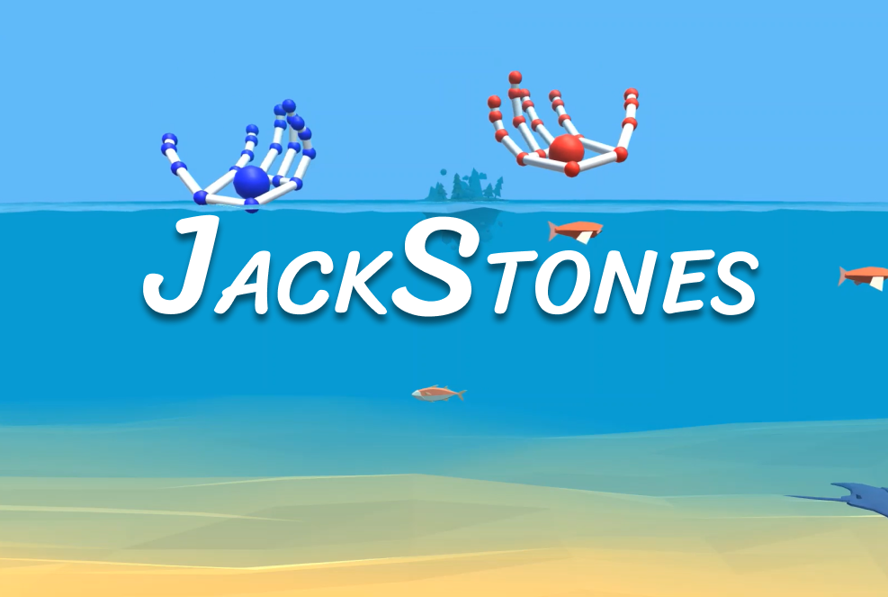

<body>
  <!-- hero -->
  <section class="hero hero-with-header">
    <div class="container">
      <div class="row justify-content-center">
        <div class="col-md-8">
          <div class="d-flex justify-content-between">
            <h1 class="text-decorated"><b>Jackstones</b></h1>
          </div>
          <p class="fs-20">
            Alongside two other developers, I designed and developed a Unity
            game to promote World Vision Canada's original documentary,
            Jackstones. The gameplay involves using the Leap Motion Controller
            to drop jackstones into the water with the goal of reaching the
            ocean floor. As more jackstones hit the floor, you will accumulate
            points and grow coral for fish to flourish. This game was showcased
            in the Courtney Park Cineplex theatre during the screening of
            Jackstones.
          </p>
        </div>
      </div>
      <div class="row justify-content-center">
        <div class="col-md-8">
          
          <h4 class="mt-4">Technologies used</h4>
          <ul class="mt-1">
            <li class="fs-20">Unity 3D</li>
            <li class="fs-20">C# Programming</li>
            <li class = "fs-20">Leap Motion Controller</li>
          </ul>
          <h4 class="mt-4">View a demo</h4>
          <div style="position:relative;padding-top:56.25%;">
            <iframe style="position:absolute;top:0;left:0;width:100%;height:100%;" src="https://player.vimeo.com/video/347962005" frameborder="0"
                allow="autoplay; fullscreen" allowfullscreen></iframe>
        </div>
        </div>
      </div>
    </div>
  </section>

</body>
